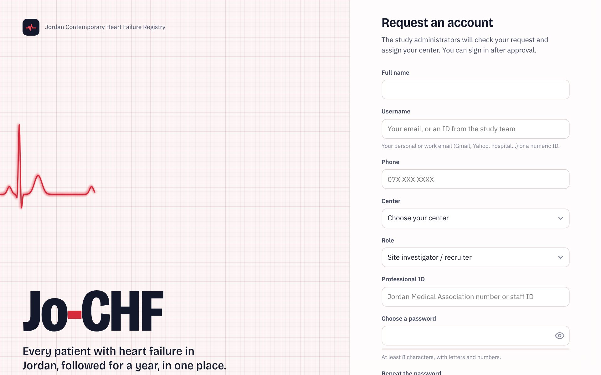

1
Request your account
- Open Jo-CHF and click Request an account under the sign-in button.
- Write your full name, your username (your email, or a numeric ID given by the study team), your phone, your center, your role and your professional ID.
- Choose a password: at least 8 characters with letters and numbers.
- Press Send request. An administrator approves your account and confirms your center. Then you can sign in.
